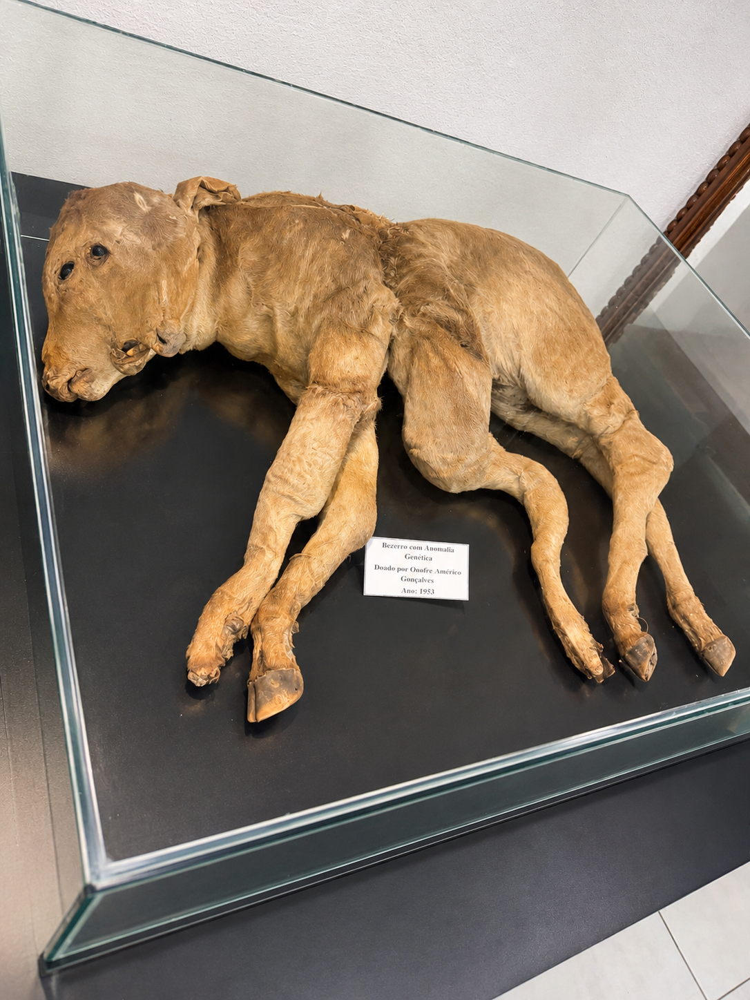

História e patrimônio cultural
A cabra de duas cabeças
Uma peça curiosa que desperta perguntas sobre ciência, história e preservação.
Uma peça que desperta curiosidade
A cabra de duas cabeças é uma das peças mais lembradas por visitantes do museu. Sua aparência singular chama a atenção e desperta o interesse de pessoas de diferentes idades.

Memória e curiosidade
Peças incomuns ajudam a despertar perguntas sobre a natureza e sobre a forma como objetos são preservados. No museu, essa cabra também faz parte das lembranças de quem visitou a exposição ao longo dos anos.
Ao conhecer uma peça como essa, podemos refletir sobre a importância da conservação e da divulgação do patrimônio cultural para as próximas gerações.
Textos introdutórios para fins educativos. Detalhes históricos devem ser conferidos com o museu antes da divulgação definitiva.